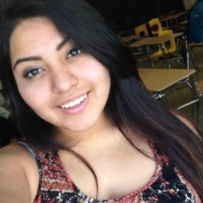
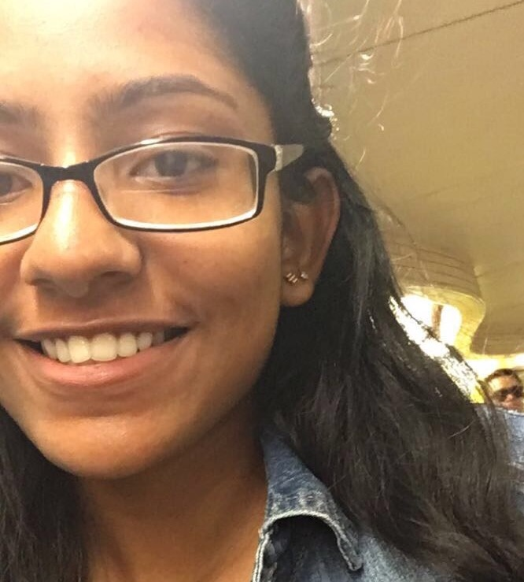

I live in White Plains and even though
i live just an hour away from the city
i don't come frequently. I had always
dreamed about coming to the city for
educational purposes and that dream
has finally came true. I love studying
marine life. Girls Who Code has changed
me in so many ways, I never believed
in diversity since I thought my race
was in the way of the being a
possibility but I learned that race and
intelligence are 2 different things. i
feel more comfortable with my thoughts
and myself. Girls Who Code also
helped me develop a love for coding.

"I’m 16 years old and live in New York.
I enjoy creative writing, drawing, history,
and math (yikes, I know). Through Girls
Who Code, I have discovered a love
for web design and robotics. I love watching
old Hindi movies, doing makeup, baking,
and going new places. My favorite
place in the world is India, and I really
want to go to Switzerland and Morocco.
I have two younger brothers and two parrots
(they’re basically the same thing though).
I really really wish I had a dog and
an unlimited supply of the world’s cannoli/
really nice pens.

My name is Aleena Thomas and I’m going
to be a junior at Sewanhaka High School.
I initially joined the Girls Who Code
Summer Immersion Program to have
something productive to do over the
summer and possibly acquire a new skill.I
didn't expect that I would meet so many
wonderful people who has made this
experience one I will always cherish.